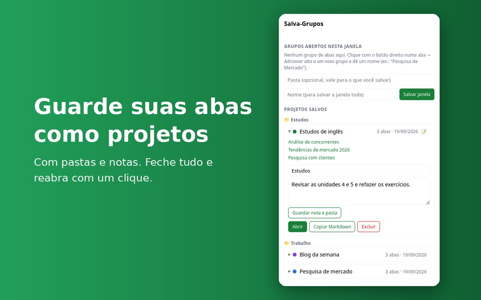
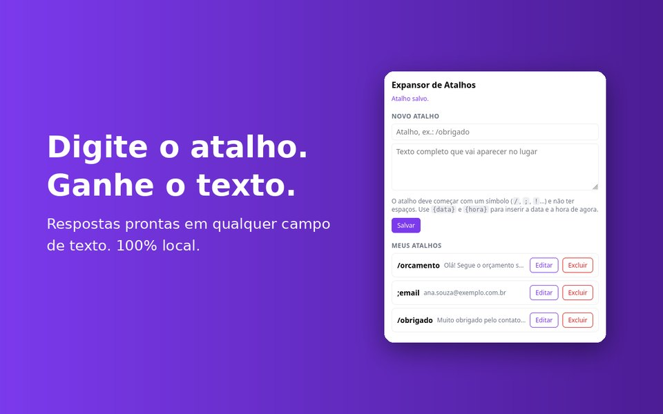
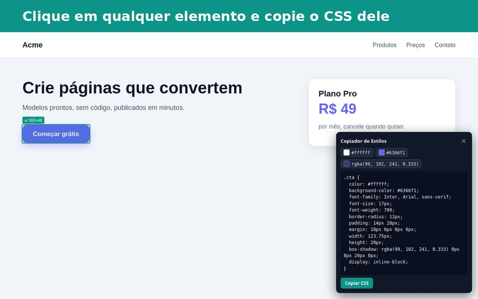
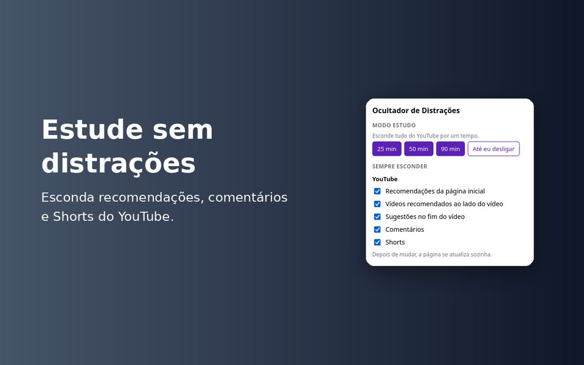
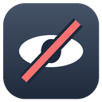
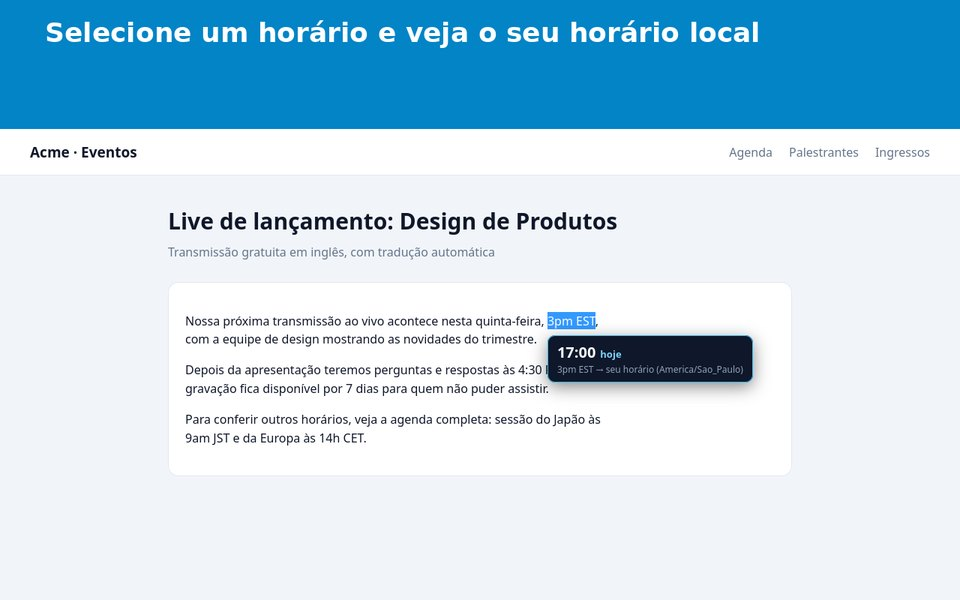
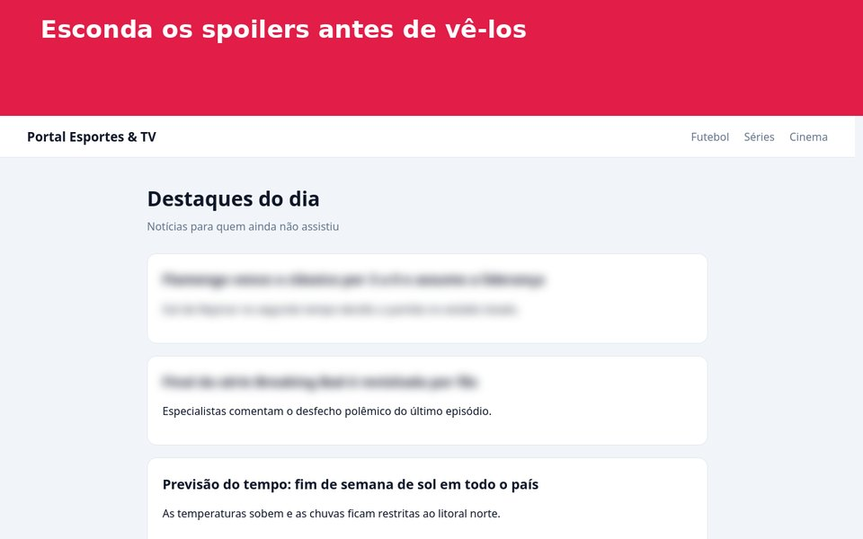
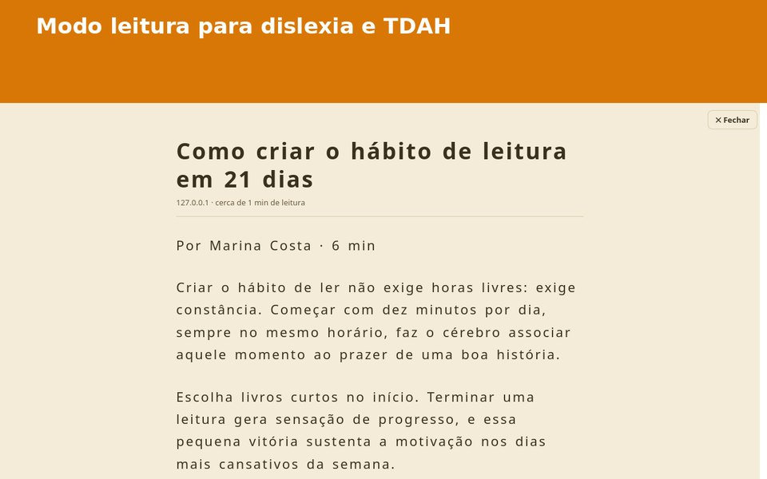
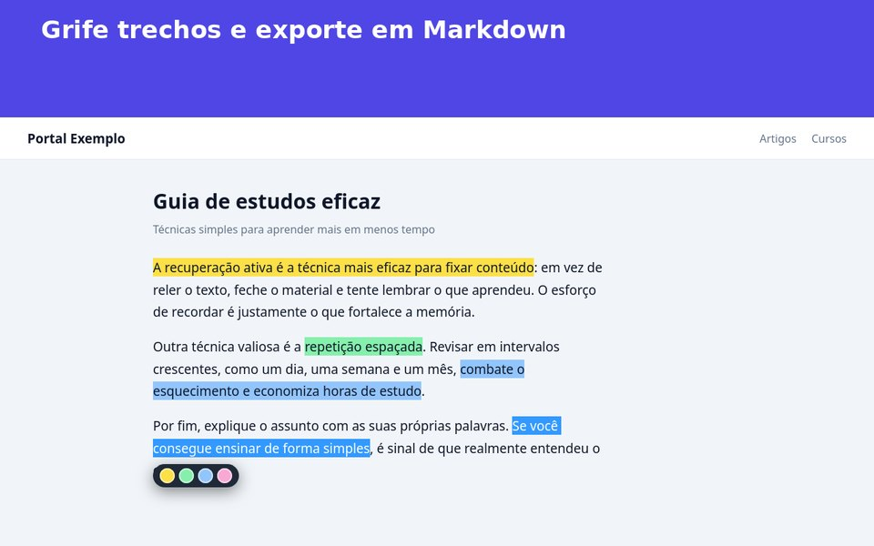

As extensões
Escolha a que resolve o seu problema. Cada uma é instalada separadamente.

Salva-Grupos por Projeto
Guarde um grupo de abas como um projeto, feche tudo e reabra com um clique, já agrupado.
- Salva um grupo de abas ou a janela inteira
- Organiza os projetos em pastas
- Guarda uma nota do que você estava fazendo
- Copia o projeto como lista em Markdown
No Firefox, precisa da versão 140 ou mais nova.

Expansor de Atalhos
Digite /obrigado em qualquer campo de texto e o texto completo aparece no lugar.
- Funciona em qualquer site e em qualquer campo
{data}e{hora}preenchidos na hora- Ctrl+Z desfaz a troca
- Ignora campos de senha e não grava o que você digita

Copiador de Estilos
Clique em qualquer elemento de um site e copie o CSS dele: cores, fonte, espaçamento, borda e sombra.
- Destaca o elemento ao passar o mouse
- Mostra a paleta e as fontes mais usadas da página
- Copia as cores como variáveis CSS
- Age só na aba ativa, quando você clica no ícone


Ocultador de Distrações
Abra o YouTube para estudar sem cair nas recomendações.
- Esconde recomendações, comentários e Shorts
- Modo estudo de 25, 50 ou 90 minutos, ou até você desligar
- Liga e desliga cada item separadamente
Gerador de Dados de Teste BR
Gere dados fictícios brasileiros com um clique e preencha o formulário da página.
- CPF e CNPJ com dígito verificador válido
- CEP, celular, telefone, nome, e-mail e data de nascimento
- Preenche o formulário achando os campos pelo nome ou rótulo (senha e usuário ficam de fora)
- Com ou sem máscara
CPF e CNPJ gerados podem coincidir com os de pessoas reais por acaso: use só em testes.

Conversor de Fuso Horário
Selecione um horário como 3pm EST e veja o seu horário na hora.
- Entende 3pm, 15:30, 17h30 e UTC+2
- Mostra se é hoje, amanhã ou ontem
- Respeita o horário de verão dos EUA (ET, CT, MT, PT)
- Lê só o texto que você seleciona, sem guardar nada

Ocultador de Spoilers
Cadastre palavras (time, série, personagem) e os textos que as contêm ficam borrados.
- Clique no trecho borrado para mostrá-lo
- Sem diferenciar maiúsculas nem acentos
- Funciona também em conteúdo que aparece depois
- Só a sua lista de palavras fica guardada

Leitura Acessível
Um modo leitura limpo, com letra grande e ajustes pensados para dislexia e TDAH.
- Tamanho da letra, espaço entre linhas e largura ajustáveis
- Temas claro, sépia e escuro
- Fonte espaçada e régua de leitura
- Tira menus, anúncios e comentários; Esc fecha
Funciona melhor em matérias, blogs e documentação.

Destacador de Texto
Grife trechos de qualquer página e volte a vê-los quando reabrir.
- Quatro cores na barrinha que aparece ao selecionar
- Os destaques reaparecem ao voltar à página
- Exporta em Markdown (esta página ou todas)
- Botão para apagar tudo; os dados ficam só no navegador
Por que confiar
Extensões pedem acesso a coisas sensíveis. Estas foram feitas para pedir o mínimo.
Perguntas frequentes
Quanto custa?
As extensões são gratuitas.
Vocês veem o que eu digito ou as abas que abro?
Não. Nada é enviado para fora do seu navegador. Leia a política de privacidade.
Qual versão do Firefox eu preciso?
Firefox 140 ou mais novo.
Funciona no Chrome?
Por enquanto estão disponíveis para Firefox e Edge.
Achei um problema ou tenho uma ideia.
Abra um pedido na página de contato.